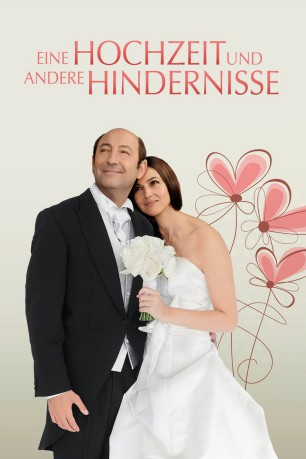

#9788 Eine Hochzeit und andere Hindernisse
 
 IMDB-Wertung: 5.5 / 10
IMDB-Wertung: 5.5 / 10  Metascore: 0
Metascore: 0 
Die beiden Brüder Roni und Zef könnten unterschiedlicher nicht sein. Roni, ein etwas linkischer, aber erfolgreicher und total unreligiöser Diamantenhändler, lebt im Hier und Jetzt. Zef ist das genaue Gegenteil - ein ernsthafter Musiker, kultiviert und zurückhaltend. Das Einzige, das sie gemeinsam haben, ist ihr etwas seniler Vater und ihre wunderschönen Töchter. Gerade als Ronis Tochter heiraten soll, ist zeitlich das Begräbnis von Zefs Frau angesetzt. Dieses unerwartete Zusammentreffen der Ereignisse brinkgt das Pulverfass dann schließlich zum Explodieren. Und ganz nebenbei entspinnt sich auch noch eine bezaubernde Liebesgeschichte - oder eigentlich zwei...
Jahr: 2013
Dauer: 100 Minuten
FSK: 12
Land: Frankreich Studio: Sunfilm EntertainmentTonspuren: DTS - ,
Untertitel: Deutsch,
Auflösung: 1080p (1920x808) Größe: 4372 MB
Genre: Komödie, Liebe
Regisseur: Danièle Thompson
Drehbuch: Danièle Thompson, Christopher Thompson, Danièle Thompson
Soundtrack: Stephen Warbeck
Darsteller:
 Eric Elmosnino als Zef Melkowich
Eric Elmosnino als Zef Melkowich- Lou de Laâge als Noga Melkowich
 Kad Merad als Roni Melkowich
Kad Merad als Roni Melkowich Clara Ponsot als Melita Melkowich
Clara Ponsot als Melita Melkowich- Max Boublil als Sam
 Monica Bellucci als Giovanna
Monica Bellucci als Giovanna Alexis Michalik als Daniel Touré
Alexis Michalik als Daniel Touré- Hande Kodja als Louise
 Ann Firbank als Dame anglaise
Ann Firbank als Dame anglaise Richard Sammel als Monsieur Künze
Richard Sammel als Monsieur Künze- Laure de Clermont-Tonnerre als Frédérique, la journaliste
- Clotilde Courau als Une people à Cannes soirée Melko
 Géraldine Pailhas als Une people à Cannes soirée Melko
Géraldine Pailhas als Une people à Cannes soirée Melko Karin Viard als Une people à Cannes soirée Melko
Karin Viard als Une people à Cannes soirée Melko- Ivry Gitlis als Aron Melkowich
- Valérie Bonneton als Clarisse Dorval / Irène Melkowich
- Christian Hecq als Monsieur Delbar
- Jean-Michel Lahmi als Le rabbin
- Boris Terral als Stéphane
- Thibault De Lussy als Le douanier
- Renaud Bechet als Le serveur
- Anaïs Tellenne als Valérie
- Frank Cicurel als Etienne
- Arnaud Maillard als Chauffeur de taxi Sam
- Virginia Anderson als La vendeuse au salon d'essayage
- Antoine Holtz als Le pompier
- Christian Harming als Chef d'orchestre Salzbourg
- Dominique Lemonnier als Chef d'orchestre Londres
- Vincent Darré als Un people à Cannes soirée Melko
- Eric Lartigau als Un people à Cannes soirée Melko
- Christopher Thompson als Un people à Cannes soirée Melko
- Mélita Toscan du Plantier als Une people à Cannes soirée Melko
- Sylvie Vartan als Une people à Cannes soirée Melko
- Siong Loong Choong als Eurostar Passager (uncredited)
Datei: X:\2013(G-H)\Hochzeit und andere Hindernisse, Eine (2013, FSK12, 1920x808).mkv seit 28.10.2018
Festplatte: HD 2012(N-Z)-2013(A-H)
 Es gibt insgesamt 43 Filme in der Gruppe '2013(G-H)'
Es gibt insgesamt 43 Filme in der Gruppe '2013(G-H)'